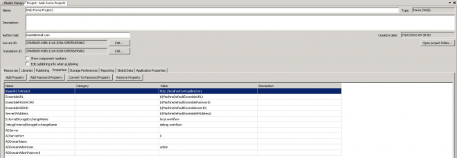

In this Article I'm going to explain how to create a Project Property and add it to the Project when a Component is added into Workflow.
- List
- Setup
- Simple Component
- Deploy
- Help File
- Logging
- Inputs
- Inspecting other Components
- Creating Globals
- Creating Project Properties (this)
- Working with SQL
- Working with a Web Service
Inspiration from the following Active Directory Library
LogicBase.Components.ActiveDirectory.dll
namespace LogicBase.Components.ActiveDirectory
public class TaskListTaskSource

Get the Property
string propertyValue = CurrentProjectHolder.GetInstance().Project.ProjectSetupData.FindProperty("PROPERTYNAME").PropertyValue;
AbstractOrchestrationProject project = CurrentProjectHolder.GetInstance().Project;
string propertyValue = project.ProjectSetupData.FindProperty("PROPERTYNAME").PropertyValue;
Set the Property
if (DesignMode.IsInDesignMode && CurrentProjectHolder.GetInstance().Project != null)
{
AbstractOrchestrationProject project = CurrentProjectHolder.GetInstance().Project;
if (project.ProjectSetupData.FindProperty("SharepointHost") == null)
{
project.ProjectSetupData.AddProperty(new Property("SharepointHost", "http://localhost/"));
}
}
If you have a password field make sure to set it with the third (3rd) argument
if (project.ProjectSetupData.FindProperty("SharepointPassword") == null)
{
project.ProjectSetupData.AddProperty(new Property("SharepointPassword", "password", true));
}
You can see this from the following class.
namespace LogicBase.Core
public class Property
public Property(string name, string value, bool isPasswordProperty)